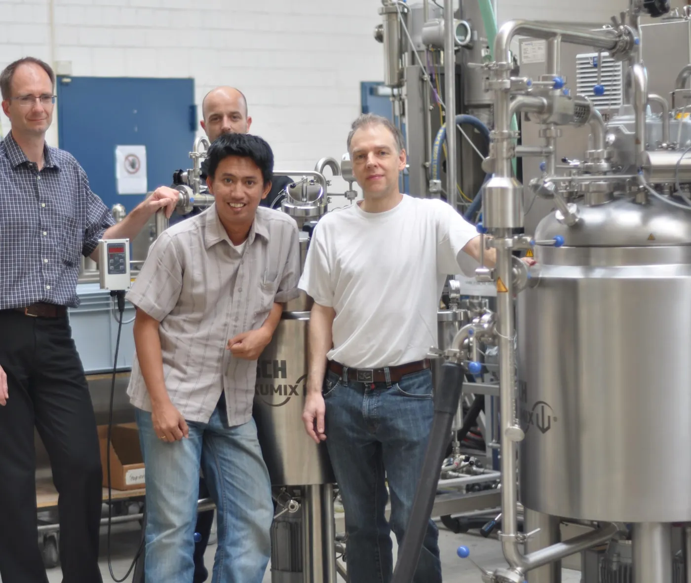

Perusahaan
Mitra rekayasa bagi industri Indonesia sejak 2008.
Berawal dari dukungan untuk general item dan mesin khusus, kini berkembang menjadi grup yang merancang, memfabrikasi, memasok, dan melayani permesinan untuk produsen ternama di Indonesia.
Siapa kami
Solusi industri yang disesuaikan dengan cara Anda beroperasi.
Verbindtech Machinery menyediakan portofolio solusi industri yang disesuaikan untuk klien nasional, dengan fokus di Jawa Barat. Kami berspesialisasi dalam teknologi proses — dari pembuatan spare part dan fabrikasi baja stainless hingga mesin khusus — didukung jaringan mitra teknologi global kelas satu.
Baik investasi baru berdasarkan studi kelayakan maupun upgrade untuk meningkatkan performa fasilitas yang ada, operasi rekayasa dan layanan teknis kami disesuaikan dengan kebutuhan, lokasi, dan kondisi operasional Anda.
- Grup didirikan
- 2008
- Verbindtech Machinery
- 2020
- Workshop & kantor
- Jababeka, Cikarang
- Area layanan
- Seluruh Jawa
- Klien yang dilayani
- 25+
- Mitra teknologi
- 6
Visi
Nilai yang kami pegang.
- 01
Kualitas
Standar tertinggi untuk layanan, produk, dan manajemen proyek kami — serta komitmen pada keunggulan setiap saat.
- 02
Komitmen
Keandalan dan hubungan jangka panjang dengan klien dan mitra dalam semua yang kami lakukan.
- 03
Kepercayaan
Kami mengutamakan klien, melindungi kepentingan Anda, dan menjaga reputasi kami.
Sejarah
Tumbuh satu workshop, satu pelanggan pada satu waktu.
Trimitra Jaya Mandiri
Grup mulai mendukung general item dan mesin khusus, pertama kali untuk industri otomotif.
Trimitra Engineering Perkasa
Permintaan part presisi melahirkan TEP, yang mendukung pembuat spare part, jig, dan industri berat.
MCT & TWU
Mitra Cipta Teknika memulai fabrikasi dan instalasi, diawali proses serbuk farmasi. TWU melakukan retrofit mesin farmasi dan pangan.
SPM otomotif
TWU berfokus pada mesin khusus untuk industri otomotif.
Tangki, sistem & AGRU
MCT menambah fabrikasi tangki dan sistem di pabrik baru di Setu; AGRU membangun mesin khusus untuk farmasi dan FMCG.
Pabrik Jababeka
Pabrik baru di Jababeka, Cikarang, untuk fabrikasi baja stainless dan non-stainless.
Verbindtech Machinery
Didirikan untuk mesin standar dan perdagangan, dengan desain yang distandarkan menuju Industri 4.0.
Cara kami bekerja
Empat kapabilitas, satu tim.
Rekayasa & desain 3D
Engineer mekanis dan elektrikal yang mengubah kebutuhan menjadi model, gambar, dan konsep kontrol.
Workshop fabrikasi
Pabrik Jababeka kami untuk fabrikasi stainless dan non-stainless, perakitan, dan uji coba.
Jaringan mitra
Enam mitra teknologi dan fabrikasi yang memasok mesin standar dan komponen teruji.
Tim layanan
Service engineer, mekanik, dan welder untuk instalasi, perawatan, dan perbaikan kerusakan.
Mitra & klien
Dalam lingkungan yang baik.
Mitra teknologi
- Xinxiang Chenwei MachineryMixing, milling, sieving & conveying
- Elin Packaging MachineryPeralatan proses & pengemasan
- Spack MachineForm-fill-seal & filling
- Zegoo Instrument (Shanghai)Metal detector & checkweigher
- Shanghai ShengsenPeralatan pengemasan
- Mitra Cipta TeknikaFabrikasi & instalasi
Klien
- Kalbe
- Kimia Farma
- Bio Farma
- Novartis
- Procter & Gamble
- L'Oréal
- AISIN
- KYB
- Kerry
- Nutrifood
- Darya-Varia
- Medifarma
- Konimex
- Kohler
- Perfetti Van Melle
- Bintang Toedjoe
- Guardian Pharmatama
- Sukanda Djaya
- Pupuk Kaltim
- CBA Chemical
- Aliet Green
- Great Giant Livestock
- Vadco Prosper Mega
- Keramischer Ofenbau
- Vakumix
- Prosweal Indomax
Pameran
Temui kami di ALLPACK Indonesia 2026.
Di booth kami: tray dryer, pengemasan stick bag (VFFS), pengemasan premade pouch, small checkweigher, metal detector 910K, aluminium foil metal detector, dan checkweigher. Bawa pertanyaan seputar produk Anda — engineer kami akan hadir.
Jadwalkan pertemuan di boothKunjungi workshop kami di Jababeka.
Lihat mesin yang sedang dibuat dan diuji, dan temui engineer yang akan menangani proyek Anda.